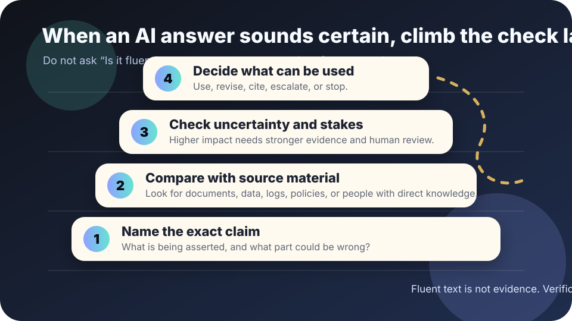

Truthfulness and verification
What is AI hallucination?
An AI hallucination is a confident-looking answer that is false, unsupported, or wrongly connected to the user’s question. The important lesson is not “AI lies like a person.” It is: fluent text is not the same as verified evidence.
The short answer
Treat AI output as a draft claim, not a source of truth. A chatbot can summarize, suggest, translate, and brainstorm, but it can also invent citations, misread a document, blend facts from different contexts, or state uncertainty as if it were settled.
Large language models generate likely continuations from patterns in data and prompts. That can produce useful answers, but it does not guarantee that every sentence is grounded in a source, current, complete, or safe to act on. OpenAI’s GPT-4 technical report explicitly notes that the model can still hallucinate facts and make reasoning errors, even while improving on earlier systems.

Why hallucinations happen
- The model may not have the needed evidence. It may lack the document, current data, local policy, private context, or domain expertise required to answer.
- The prompt may ask for more certainty than the evidence supports. If you ask for a neat answer, the model may produce one even when the responsible answer is “I do not know.”
- Similar patterns can be blended. Names, dates, laws, papers, software commands, or quotes can be mixed together into something plausible but wrong.
- Retrieval can fail too. Even tools that search or cite documents can retrieve the wrong passage, omit a key limitation, or summarize a source inaccurately.
- Pressure changes behavior. “Be concise,” “give me the answer,” or “do not hedge” can remove useful uncertainty from the final response.
The verification ladder
- Name the exact claim. Highlight the sentence you might rely on. Is it a fact, citation, calculation, legal interpretation, medical suggestion, code instruction, or summary of a person’s position?
- Compare with source material. Use the original document, official page, dataset, log, transcript, policy, expert, or measurement. Do not accept a citation until it actually supports the sentence.
- Check uncertainty and stakes. Low-stakes brainstorming can tolerate roughness. Decisions affecting money, health, education, work, safety, rights, reputation, or public policy need stronger review.
- Decide what can be used. Use the answer, revise it, cite a verified source instead, ask a qualified person, run a test, or stop.
Common examples
- Fake source trail: an AI gives a journal article, law, case, or report title that does not exist or does not say what the answer claims.
- Wrong summary: the AI compresses a document but misses exceptions, deadlines, dissent, uncertainty, or who said what.
- Confident local advice: the AI gives rules for a school, city, workplace, or country without knowing the actual policy or jurisdiction.
- Code that almost works: the AI suggests a command, package, or API call with a made-up option or outdated behavior.
- Number fog: the AI performs arithmetic, compares statistics, or reports a percentage without a reproducible calculation.
Prompts that reduce risk
- “Quote the exact source sentence that supports each claim.”
- “Separate what the document says from your interpretation.”
- “List assumptions and tell me what you cannot verify.”
- “Give me a checklist for how I should verify this outside the model.”
- “If the evidence is weak, say so instead of filling the gap.”
These prompts help, but they are not a guarantee. Verification still has to happen outside the model for important claims.
When to stop and get stronger review
- The answer affects someone’s rights, benefits, job, grade, health, housing, legal position, safety, or reputation.
- The model provides a citation you cannot open, a quote you cannot find, or a number you cannot reproduce.
- The answer depends on current events, local law, private records, specialized expertise, or confidential context the model may not have.
- The AI output will be copied into an official record, public statement, policy, contract, medical note, disciplinary file, or procurement decision.
A hallucination is not harmless just because it is accidental. Match the review standard to the possible harm.
Sources and further reading
- OpenAI — GPT-4 Technical Report
- NIST — AI Risk Management Framework
- UK Information Commissioner’s Office — generative AI and data protection consultation series
- Ji et al. — Survey of hallucination in natural language generation
This guide is educational, not legal, medical, financial, or safety advice. For high-stakes uses, use qualified review and documented source checks.